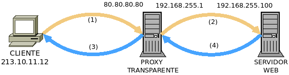

7.5.2.3.2. Transparencia¶
En ocasiones, por ejemplo cuando se han habilitido mecanismos para restringir el acceso según el origen o se desea limitar el número de accesos, es imprescindible para los servidores conocer cuál es el cliente que lleva a cabo la petición. Sin embargo, un proxy inverso recoibe la peticion original del cliente y la replique dirigiéndola al servidor por lo que la petición recibe el servidor la hace el proxy y no el cliente. En consecuencia, el servidor final sólo recibirá peticiones originadas por una única máquina (el proxy) y será incapaz de tomar decisiones en base al origen de la petición.
Para paliar este problema existen dos soluciones:
Que el protocolo de capa de aplicación articule algún mecanismo para informar al servidor final de que la petición se hacen a través de un proxy y de cuál es el cliente en realidad. Tal es el caso en HTTP de la cabecera X-Forwarder-For, gracias a la cual el servidor web será capaz de saber cuál es en realidad el cliente, aunque la IP de origen de los paquetes sea la del proxy, El tratamiento de esta cabecera en nginx, se lleva a cabo en su epígrafe correspondiente.
La que nos ocupa que es hacer el proxy realmente transparente, esto es, que en los paquetes de la petición que recibe el servidor fiunal, la IP de origen sea la del cliente y no la del proxy.
7.5.2.3.2.1. Requisitos¶
Para hacer un transparente un proxy es necesario:
Que los clientes comuniquen con el proxy (lo cual es lo que se espera si el proxy es inverso).
Una configuración extra de la máquina en la que se ejecuta de forma transparente el proxy.
Que las respuestas del servidor, que obviamente tendrán como destino el cliente, puedan ser interceptadas por el proxy para que sea él quien las despache hacia el cliente original. Así pues, el servidor final no puede estar dispuesto en cualquier lugar, sino en uno cuyo camino de regreso pase por el proxy.
Lustremnos lo dicho con un ejemplo:
Las comunicaciones del esquema son las siguientes:
Conexión |
Origen |
Destino |
Comentario |
|---|---|---|---|
213.10.11.12 |
80.80.80.80 |
El cliente conecta coon la IP 80.80.80.80 que, en realidad, es el proxy y no el servidor final. |
|
213.10.11.12 |
192.168.255.10 |
La IP original no cambia porque el proxy es transparebte. |
|
192.168.255.10 |
213.10.11.12 |
El servidor responde al cliente, pero el proxy captura la respuesta, porque está situado en el camino de vuelta. |
|
80.80.80.80 |
213.10.11.12 |
La respuesta acaba en el cliente. |
En consecuencia, aunque el cliente habla con el proxy y el proxy redirige la petición al servidor; el servidor recibe las peticiones como si estuviera hablando directamente con el cliente.
7.5.2.3.2.2. Solución general¶
Desde la versión 2.2 del núcleo, Linux es capaz de comportarse como un proxy transparente, para lo cual se requiere:
Que la aplicación proxy esté preparada para ello y utilice un socket transparente. Este requisito debe cumplirlo la aplicación, por lo que como administradores sólo podemos comprobar si es apta o no. Ahora bien, poder crear un socket transparente exige a la aplicación la capacidad (véase capabilities(7))
CAP_NET_ADMIN. Esto puede lograrse:Ejecutando la aplicación como root.
Concediéndole tal capacidad al ejecutable (p.e. vea cómo hacerlo).
Cómo se configure la aplicación para que pueda actuar transparentemente es particular de cada una: el siguiente epígrafe estará dedicado a la configuración de algunas.
Como el tráfico de respuesta del servidor tiene por destino el cliente original y el proxy ha de interceptar también este tráfico, es forzoso que el proxy se interponga en el camnio de regreso.
Finalmente, al pasar los paquetes de respuesta por el proxy éste debe procesarlos, aunque la IP de destino sea la del cliente. Para ello debe manipularse el encaminamiento. Este es el único requisito que sí podemos configurar de forma general y al que dedicaremos el resto del epígrafe.
Para que los paquetes de respuesta dirigidos al cliente pasen por la aplicación de proxy debe lograrse que éstos se encaminen a través de la interfaz de loopback. Para ello:
Hacemos que el tráfico que debe volver a pasar por el proxy esté marcado con una marca (p.e. la 0xff), para lo cual podemos utilizar el cortafuegos. Cómo deba utilizarse el cortafuegos depende de dónde se encuentre el servidor final:
Cuando está en la misma máquina que el proxy[1], podemos usar la estrategia de que éste redirija los paquetes a una dirección local particular (p.e. la 127.1.1.1, en la que debe escuchar el servidor y ningún otro). De esta forma, lograremos marcar sólo los paquetes dirigidos al servidor procedentes del proxy:
# iptables -t raw -A PREROUTING ! -i lo -d 127.0.0.0/8 -j DROP # iptables -t mangle -A POSTROUTING ! -o lo -s 127.0.0.0/8 -j DROP # iptables -t nat -A OUTPUT -d 127.1.1.1 -j CONNMARK --set-mark 0xff # iptables -t mangle -A OUTPUT -m connmark --mark 0xff -j CONNMARK --restore-mark
Cuando está en una máquina distinta, la estrategia es marcar en el proxy los paquetes entrantes (que son los de vuelta) cuyo destino es un proxy transparente[2]:
# iptables -t mangle -A PREROUTING -m socket --transparent -j MARK --set-mark 0xff
Advertencia
Por alguna razón en mi sistema, nftables es incapaz de traducir la sentencia anterior, pero existe equivalente:
# nft add table mangle # nft add chain mangle PREROUTING "{ type filter hook prerouting priority -150; }" # nft add rule mangle PREROUTING socket transparent 1 meta mark set 0xff
Se indica al núcleo que haga posible el encaminamiento a través de la interfaz de loopback[3]:
# sysctl -w net.ipv4.conf.default.route_localnet=1 # sysctl -w net.ipv4.conf.all.route_localnet=1
Se alteran las reglas de encaminamiento para que el tráfico marcado (con, por ejemplo, 0xff) vaya a la interfaz de loopback:
# ip rule add fwmark 0xff lookup 100 # ip route add local 0.0.0.0/0 dev lo table 100
7.5.2.3.2.3. Soluciones particulares¶
La intención es aplicar la solución antes descrita para que actúen como proxies transparentes aplicaciones utilizados en este manual: stunnel, sslh, haproxy y nginx. Ahora bien, para comprobar si, efectivamente, el proxy actúa de modo transparente, es necesario que el servidor final nos muestre cuál es la IP del cliente. Un modo muy sencillo es usar como servidor final nginx con esta configuración:
server {
listen 80; # Puerto y dirección de escucha pueden cambiar según el caso.
location / {
default_type text/plain;
return 200 "Saludos desde '$hostname'. Te conectas desde $remote_addr:$remote_port.\n";
}
}
y que desde el cliente se haga la consulta[4]:
# wget --no-check-certificate -qO- https://destino
Saludos desde 'servidor'. Te conectas desde 192.168.0.20:43123.
donde el destino será el proxy (probablemente) y el protocolo dependerá de qué papel juegue el proxy. Si el proxy inverso es explícito veremos la IP del proxy, pero si es transparente –como pretendemos–, aparecerá la IP del propio cliente.
7.5.2.3.2.3.1. stunnel¶
stunnel permite encapsular con SSL cualquier tipo de tráfico; y, si queremos que el servidor final conozca la dirección del cliente original y no la IP de la parte servidor de stunnel debemos hacer que éste se comporte de forma transparente.
Podemos poner en práctica la solución general, a la cual sólo le falta desarrollar la primera parte, esto es, la relativa a la propia aplicación proxy. Es configuración (partido del ejemplo ilustrativo en que se expuso qué es stunnel), puede ser esta, si el servidor final se encuentra en la misma máquina:
; La IP de la interfaz física del servidor es 192.168.0.14
[netcat-ssl]
transparent = source
cert = /etc/stunnel/stunnel.pem
accept = 192.168.0.14:443
connect = 127.1.1.1:80
donde las novedades son la particular dirección local del servidor final (coherente con la que se cita en la solución general para proxy transparente), y la línea en que indicamos a stunnel que mantenga la IP original del cliente.
En caso de que el servidor final estuviera en una máquina distinta, la última línea deberíamos cambiarla por algo así:
; El servicio final se encuentra en otra máquina (192.168.255.10)
connect = 192.168.255.100:80
Advertencia
Tenga presente que, además de toda la configuración de cortafuegos y reglas de encaminamiento, debemos asegurarnos de que stunnel tiene capacidad para crear el socket transparente y que la vuelta de los paquetes pasará por la máquina con stunnel.
7.5.2.3.2.3.2. SSLH¶
A la solución general, basta añadirle la
configuración particular del sslh, que podría ser la siguiente en
/etc/default/sslh:
RUN=yes # SSLH corre permanentemente, no a través de inetd.
[...]
DAEMON_OPTS="--transparent --user sslh --listen 172.22.0.2:443 \
--ssh 127.1.1.1:22 --ssl 127.1.1.1:443 --openvpn 127.1.1.1:1194 \
--pidfile /var/run/sslh/sslh.pid"
donde se indica que se quiere hacer transparente el servicio, y se redirige el tráfico a una interfaz local particular.
Nota
En este caso, no se tiene que ejecutar como administrador porque
Debian compila el programa con la opción USELIBCAP=1.
7.5.2.3.2.3.3. nginx¶
La configuración para hacer que nginx se comporte como proxy transparente pasa por ejecutarlo como administrador:
# Esto es nginx.conf
user root
[...]
stream {
server {
listen 80;
proxy_bind $remote_addr transparent;
proxy_pass 127.1.1.1;
}
}
que supone que el servidor final está en la propia máquina. Esta configuración de proxy TCP, a menos que fuera con SSL y se usara SNI para discriminar los tráficos, resulta un poco inútil. La transparencia también puede practicarse en un proxy HTTP:
upstream backend {
server 192.168.0.100;
server 192.168.0.200;
}
server {
listen 80;
location / {
proxy_bind $remote_addr transparent;
proxy_pass http://$backend$uri;
}
}
Ver también
Échele un ojo a una entrada sobre el asunto en el blog oficial.
7.5.2.3.2.3.4. haproxy¶
A la solución general, basta añadirle algunos pequeños cambios en la configuración. Dependiendo de si queremos correr el servicio como administrador o utilizar las capabilities así deberán ser los cambios, pero en cualquier caso deberemos configurar cualquier backend de este modo:
backend ssh mode tcp source 0.0.0.0 usesrc clientip server ssh 127.1.1.1:22
para que se envíen los paquetes utilizando la IP del cliente como origen.
Nota
Si los servidores finales están en la misma máquina recuerde hacer referencia a ellos usando una IP local no habitual como la 127.1.1.1 sugerida en la solución general.
Nota
- En el caso del servidor web, como se conserva la IP del cliente, no
es necesario alterar la cabecera X-Forwarded-For, pero sí la referente al protocolo, que cambia de HTTPs a HTTP. Por tanto:
backend http
mode http
#option forwardfor
source 0.0.0.0 usesrc clientip
reqadd X-Forwarded-Proto:\ https
server nginx 127.1.1.1:80
Y los cambios, según optemos por una estrategia u otra:
- Como root
Comentar en la sección global los líneas que propician que haproxy degrade sus permisos una vez arrancado:
#user haproxy #group haproxy
- Usando capabilities
Habrá que conferir las capabilities adecuadas al ejecutable:
# setcap 'cap_net_admin,cap_net_bind_service=ep' /usr/sbin/haproxy
La primera ya hemos dicho que permite crear el socket transparente, mientras que la segunda escuchar en puerto privilegiado.
Advertencia
Cada vez que se sustituya el ejecutable con una actualización, se perderán estas capacidades y habrá que volver a definirlas.
Comentar en la sesión global las dos líneas anteriores y también otra referente a una jaula que ya es imposible e innecesaria:
#chroot /var/lib/haproxy #user haproxy #group haproxy
Como posiblemente hayamos arrancado ya el servicio, limpiar algunos archivos que genera la ejecución porque pertenecen a root y el usuario sin privilegios no tiene permisos para sobrescribirlos:
# invoke-rc.d haproxy stop # rm -f /run/haproxy.pid /run/haproxy/* /run/haproxy-master.sock # ls -ld /run/haproxy drwxrwsr-x 2 haproxy haproxy 80 Jul 17 21:59 /run/haproxy/ # cat >> /etc/default/haproxy PIDFILE="/run/haproxy/haproxy.pid" EXTRAOPTS="-S /run/haproxy/haproxy-master.sock"
Forzar a systemd para que ejecute el servicio como el usuario haproxy, lo cual implica manipular su configuración de arranque:
# mkdir /etc/systemd/system/haproxy.service.d # cat > /etc/systemd/system/haproxy.service.d/10-nonroot.conf [Service] User=haproxy Group=haproxy # systemctl daemon-reload # systemctl cat haproxy.service [... configuración vigente del arranque de haproxy ...] # invoke.rc-d haproxy start
Notas al pie